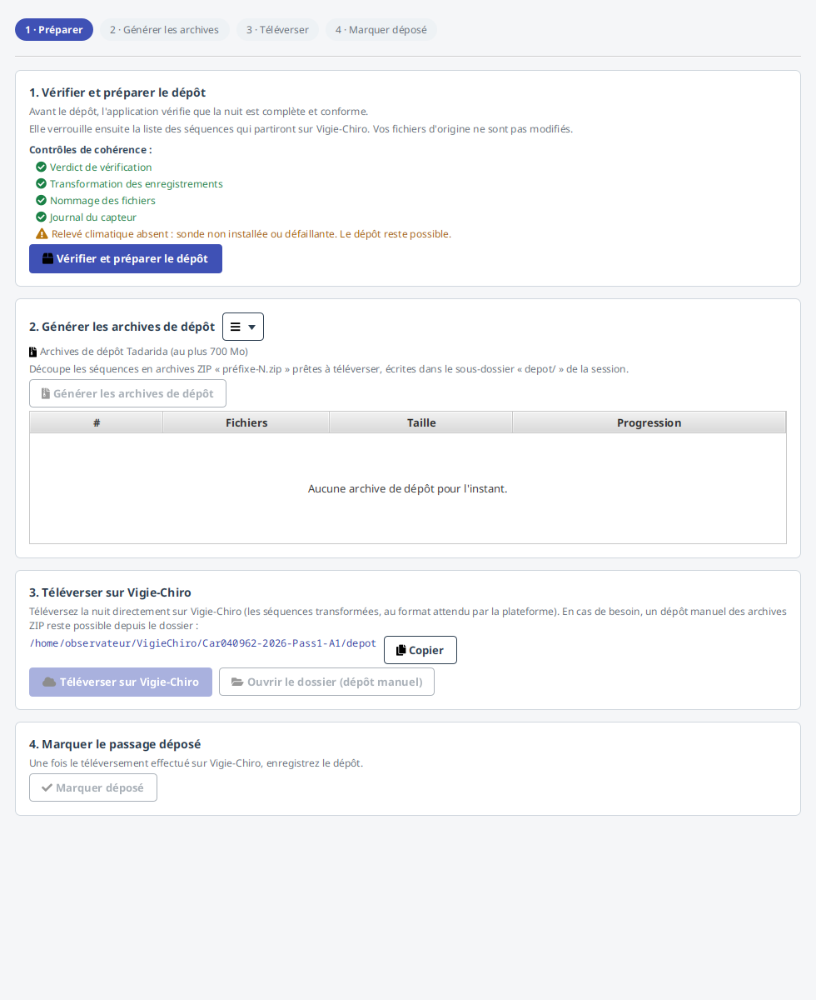
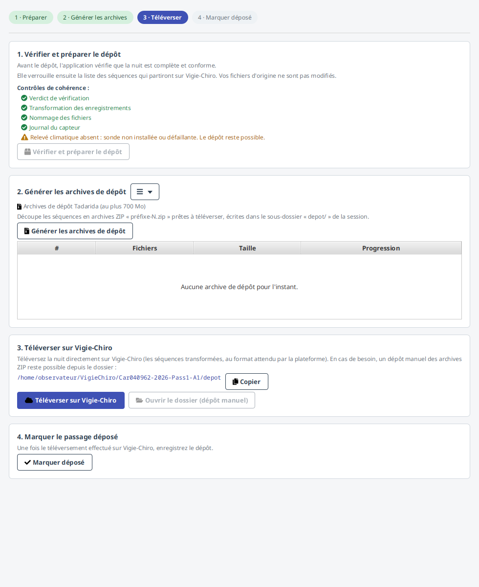
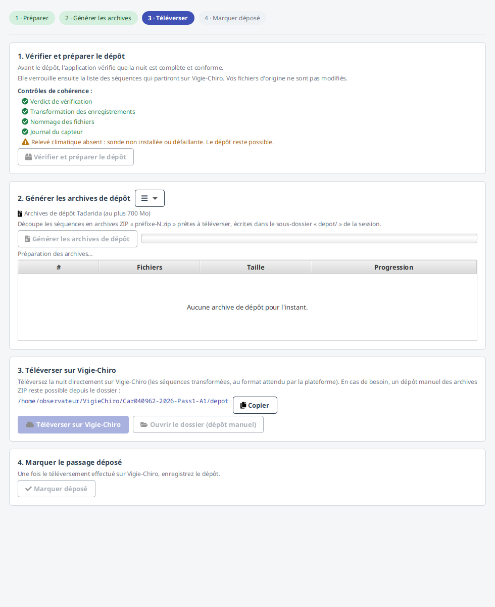
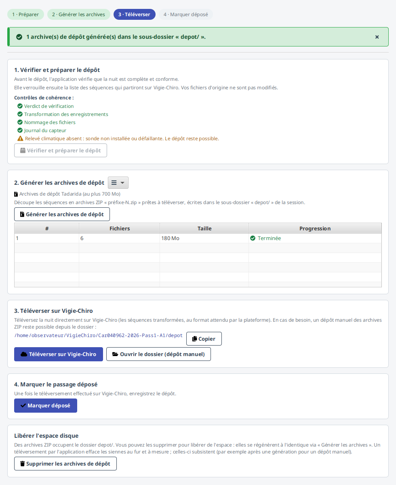
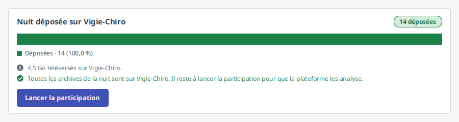
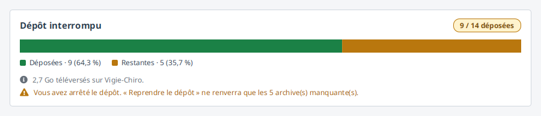
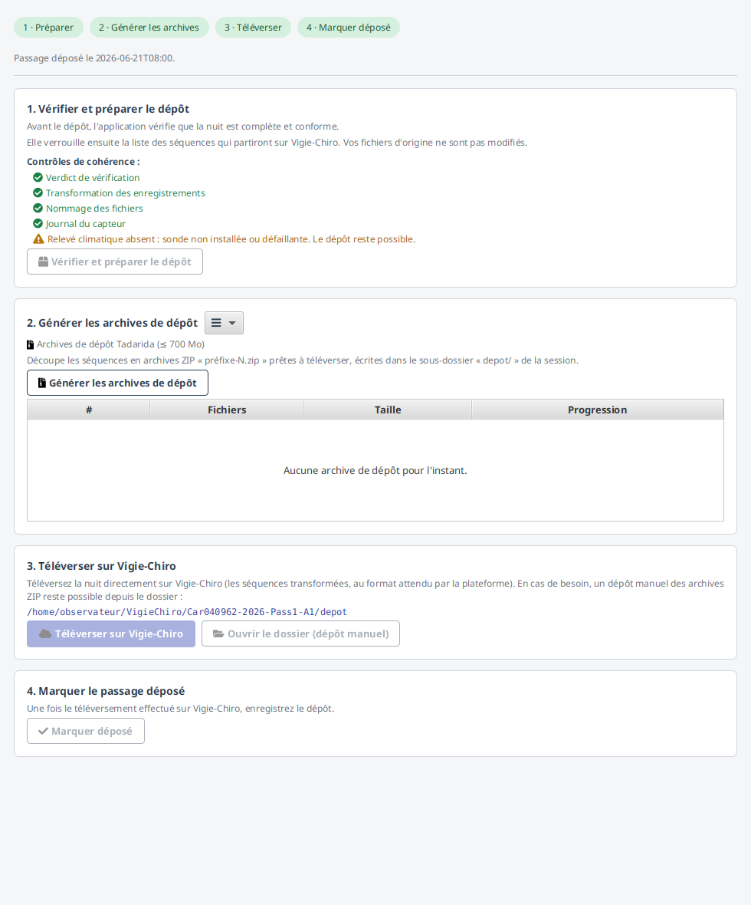
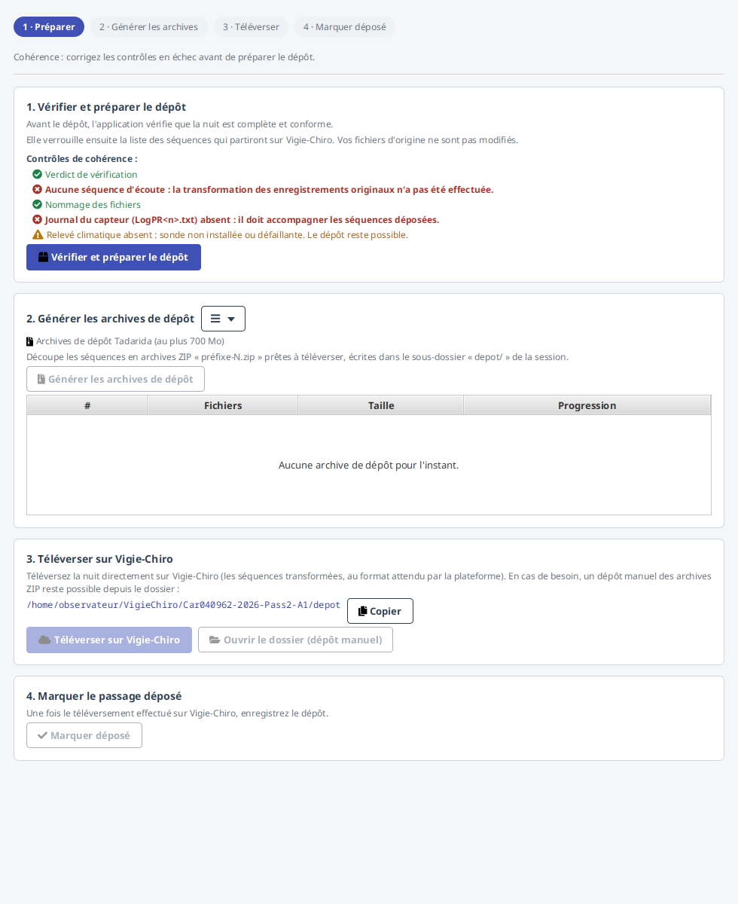

Préparer le dépôt¶
L'écran Préparer le dépôt prépare et trace le dépôt d'une nuit vérifiée sur la plateforme Vigie-Chiro. Le dépôt suit un flux ordonné en quatre étapes, rappelé en haut de l'écran par un fil d'étapes (l'étape courante est mise en avant) :
« 1 · Préparer », « 2 · Générer les archives », « 3 · Téléverser », « 4 · Marquer déposé ».
1. Vérifier et préparer le dépôt¶

Le récapitulatif indique le nombre de séquences et le volume. Une checklist de cohérence montre, contrôle par contrôle et même quand tout est satisfait, ce qui est vérifié : transformation effectuée, fichiers bien nommés, journal du capteur présent, relevé climatique. Chaque ligne est marquée ✓ (satisfait), ✗ (à corriger, bloquant) ou ⚠ (avertissement non bloquant, comme un relevé climatique absent). « Vérifier et préparer le dépôt » verrouille ensuite la liste des séquences qui partiront. Vos fichiers d'origine ne sont pas modifiés. Le passage passe alors au statut « Prêt à déposer ».
2. Générer les archives de dépôt¶

Ce que l'on téléverse sur Vigie-Chiro, ce sont des archives ZIP (≤ 700 Mo par défaut, réglable dans Réglages), découpées depuis les
séquences et écrites dans le sous-dossier depot/ de la session. La génération peut être longue
sur une grosse nuit : elle s'exécute en arrière-plan, avec un indicateur d'activité, et les actions
sont neutralisées le temps de l'écriture (on ne risque pas de téléverser une archive incomplète).
Si vous êtes connecté, cette étape est facultative
Le téléversement de l'étape 3 produit lui-même les archives dont il a besoin, au fur et à mesure, et les efface du disque dès qu'elles sont en ligne. Vous pouvez donc passer directement de la préparation au téléversement : le stepper indique d'ailleurs « 3 · Téléverser » comme étape courante, sans archive sur le disque.
Générer d'abord reste utile pour un dépôt manuel (hors connexion, ou pour déposer depuis le site web) : c'est le seul cas où il faut les archives complètes sur votre machine.
Conséquence directe : il n'est plus nécessaire d'avoir la place pour toutes les archives à la fois. Le téléversement n'en garde que deux sur le disque à un instant donné.

Le tableau de suivi des archives laisse choisir et réordonner ses colonnes (clic droit ou menu ☰ « outils ») : voir Personnaliser les tableaux. La table de dépôt de l'étape 3 offre le même réglage, mémorisé séparément.
3. Téléverser sur Vigie-Chiro¶

Connecté, vous pouvez téléverser sans avoir rien généré : l'étape 3 est déjà l'étape courante, et la table des archives est vide.

Deux chemins s'offrent à vous :
-
Téléversement automatique (application connectée à Vigie-Chiro) : le bouton « Téléverser sur Vigie-Chiro » dépose la nuit directement : la participation est créée (ou réutilisée si elle l'a été à l'import), puis les archives ZIP sont téléversées plusieurs à la fois (5 en parallèle), ce qui raccourcit nettement le dépôt d'une grosse nuit. Une table de dépôt suit chaque archive (en attente → en cours → déposé, ou échec avec la raison au survol) avec une barre de progression par archive qui reflète les octets réellement envoyés, et la barre de statut en bas de la fenêtre affiche l'avancement d'ensemble en continu, même quand vous faites défiler l'écran.
Si l'espace disque n'a pas permis de générer les archives, l'application se replie automatiquement sur le téléversement des séquences WAV une à une (plus long, mais équivalent pour la plateforme). - Téléversement manuel (repli, sans connexion) : « Ouvrir le dossier » ouvre le sous-dossier
depot/dans le gestionnaire de fichiers, et vous déposez les archives sur Vigie-Chiro depuis votre navigateur.
Un dépôt interrompu se reprend¶
Le dépôt automatique est reprenable : une coupure réseau, une fermeture de l'application ou un échec partiel ne font rien perdre. Le passage prend le statut « Dépôt en cours » et, à la réouverture de l'écran, la table de dépôt réaffiche l'état exact de chaque fichier. Le bouton devient alors « Retenter les échecs » : seuls les fichiers manquants sont re-téléversés, jamais ceux déjà en ligne. Le passage ne devient « Déposé » que lorsque tous les fichiers sont en ligne.
Ce que le dépôt vous rend à la fin¶
Quand le téléversement se termine, un compte rendu dit ce qui est en ligne, en proportions.

Il ne remplace pas la table : celle-ci garde le détail par fichier, avec la cause de chaque échec. Le compte rendu répond à la question qu'on se pose à cet instant - quelle part est arrivée - et il ajoute deux choses que la table ne donne pas : le volume téléversé, et ce qu'il reste à faire.
C'est le sens du bouton « Lancer la participation » en pied de compte rendu : téléverser ne suffit pas, et rien ne le disait à ce moment-là. Il n'apparaît que lorsque tout est en ligne : lancer l'analyse d'une nuit incomplète la ferait analyser incomplète.
Si vous avez arrêté le dépôt en cours de route, le compte rendu le dit sans le déguiser :

La part « Restantes » est la différence entre ce que vous avez arrêté et un dépôt réussi : sans elle, la barre serait pleine alors qu'il manque des archives sur la plateforme. Aucune action n'est proposée en pied, parce que la suite est « Reprendre le dépôt », un bouton déjà sous vos yeux.
4. Lancer la participation (ou marquer le passage déposé)¶

Le bouton de cette dernière étape change selon votre situation.
Vous avez téléversé depuis l'application (une participation est rattachée à la nuit) : le bouton devient « Lancer la participation ». Il demande à Vigie-Chiro de traiter les fichiers que vous venez de déposer : la plateforme décompresse les archives, puis lance l'identification Tadarida.
Téléverser ne suffit pas : il faut lancer la participation
Tant que vous ne l'avez pas cliqué, vos fichiers sont bien sur la plateforme, mais aucun traitement n'est lancé : la participation reste vide sur le site web et aucun résultat n'arrivera. C'est une action volontaire, et le seul moyen de déclencher le calcul depuis l'application (vous pouvez aussi le faire depuis la page de la participation, sur le site).
Vous avez téléversé depuis le navigateur (repli manuel) : le bouton reste « Marquer déposé ». Il fait passer le passage au statut « Déposé » (ce qui déverrouille la validation Tadarida) et trace la date du dépôt : c'est une écriture locale, l'application ne peut pas deviner seule ce que vous avez déposé à la main.
Suivre l'analyse : la carte « Traitement Vigie-Chiro »¶
Déposer n'est pas la fin. Une fois la participation lancée, la plateforme analyse la nuit avec Tadarida, et les observations ne sont récupérables qu'une fois cette analyse terminée. La carte « Traitement Vigie-Chiro » apparaît sous la dernière étape dès que l'application a déposé la nuit, et vous dit où en est le calcul :
| Ce que la carte affiche | Ce que cela veut dire |
|---|---|
| Analyse planifiée | La demande est enregistrée, un calculateur va la prendre en charge. |
| Analyse en cours | Le calcul tourne. Comptez plusieurs dizaines de minutes. |
| Analyse terminée | Les observations sont prêtes : importez-les depuis « Sons & validation ». |
| Un premier essai a échoué… | La plateforme a relancé le calcul d'elle-même. Patientez. |
| L'analyse a échoué | Le motif est indiqué. |
L'application n'interroge pas la plateforme en permanence : elle affiche le dernier état qu'elle connaît, en précisant de quand il date : y compris hors connexion. Le bouton « Actualiser » redemande l'état à Vigie-Chiro, et vous pouvez fermer l'application entre-temps : le calcul se poursuit sur le serveur.
Si une analyse traîne depuis plus de 24 h, la carte vous le signale : elle semble bloquée, et il peut valoir la peine de la relancer.
Une nuit déjà analysée ne se relance pas
Une fois l'analyse terminée, le bouton « Lancer la participation » se verrouille. Ce n'est pas une limitation arbitraire : relancer un calcul efface d'abord les observations côté serveur pour les recalculer : or l'audio d'un dépôt en archives n'est pas conservé par la plateforme. Le recalcul rendrait donc une participation vide, définitivement.
Si vous devez tout de même relancer (typiquement après un échec, où il n'y a plus rien à perdre),
cela reste possible en ligne de commande, délibérément :
vigiechiro lancer-traitement-vigiechiro --passage <id> --forcer.
Recommencer un dépôt de zéro¶
Le bouton « Réinitialiser le dépôt » (visible dès qu'un dépôt a été entamé) efface le suivi local : l'application oublie ce qu'elle croit avoir déposé et le passage revient à « Prêt à déposer ». Le téléversement suivant repart alors de zéro, toutes archives comprises.
Il est utile quand le suivi local ne correspond plus à la réalité de la plateforme : typiquement si une nuit apparaît « Déposée » côté application alors que la participation est vide côté site web. Vos archives sur le disque et le lien vers la participation sont conservés : rien n'est perdu, on ne remet à zéro que le compteur.
La barre de statut : l'état du dépôt en permanence¶
L'écran est long ; la barre de statut du bas de fenêtre garde l'essentiel sous les yeux :
- à gauche, le contexte (« Carré 640380 · A1 · N° 2 ») ;
- au centre, le statut et le récapitulatif (« Prêt à déposer · 4806 séquences · 13,2 Go ») ;
- à droite, l'état vivant : la progression du dépôt, sinon celle de la génération d'archives (avec l'estimation du temps restant), sinon une alerte d'espace disque, sinon le bilan des archives présentes (« 21 archive(s) · 5,9 Go dans depot/ »).
Checklist de cohérence : ce qui bloque¶
Si la nuit n'est pas en état d'être déposée (par exemple séquences d'écoute absentes ou journal du capteur manquant), les contrôles concernés passent en ✗ dans la checklist, avec la raison et la correction à apporter. Le bouton « Vérifier et préparer le dépôt » reste grisé tant qu'un contrôle est en échec. Un ⚠ (relevé climatique absent) n'empêche pas, lui, de préparer le dépôt.
